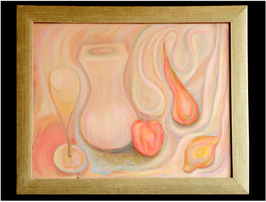
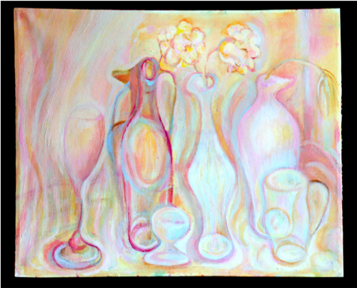

MAIA KANKAVA
THE SINGER, THE PIANIST, THE PAINTER
Graduated from the
Tbilisi State Conservatory where she majored in vocal and piano. From
the age of eight she played in following movies: «Finders of the sunk
city» - directed by D.Abashidze «Melodies of Verisubani» - Musical,
directed by G.Shengelaia «Sand remains» - directed by G.Shengelaia
«Love your force» - directed by R.Charhalashvili «Poem about the
Abkhazian guy» - directed by A.Zhgenti “Younger sister” - musical,
directed byr Z.Kakabadze She studied at theatrical institute at
actor’s faculty in Michael Tumanishvili’s class, also studied at
secondary faculty of University majoring in painting. In 1993 on
Evgenie Machavariani’s representation, the art director of the
Philharmonic society, the professor of Conservatory she went on the
international jazz festival to Novosibirsk (Maia Kankava - vocal,
Dinara Virsaladze - piano). There Maia Kankava together with Joe
Carter, the known American singer, executant of Spirituals, became
the winner of festival. For the best execution of a vocal of a jazz
they have been awarded with the top prizes «Ms. Festival» and «Mr.
Festival». The same year, by request of the Second Channel of the
Georgian TV the director G.Molodinashvili has shot a film about Maia
Kankava. In 1977 on representation of the Georgian Film studio Maia
went to Moscow and Riga on a film festival «Comrade _ cinema 77»
where together with such known actors, as Smoktunovski, Eve Kivi,
Chursina, Svetlana Toma etc took part in theatrical concerts. In the
same years acted on podiums as model. She was in Germany (Koln) under
the invitation for participation in private concerts. She executed
«Magnificent» and «Spirituals» of Bach. Maia with success has acted
as the singer and the pianist. In the same place her art works have
been sold. In 2001 she had a personal exhibition in art gallery
“TMC”. In 2003 has taken part in a forum of artists - «The Art scale
exhibition of the eightieth years». She often takes part as the
artist in charitable art exhibitions arranged by artist Gia
Gugushvili. She got the award and diplomas for leading role in movie
“Melody of Verisubani”.
 